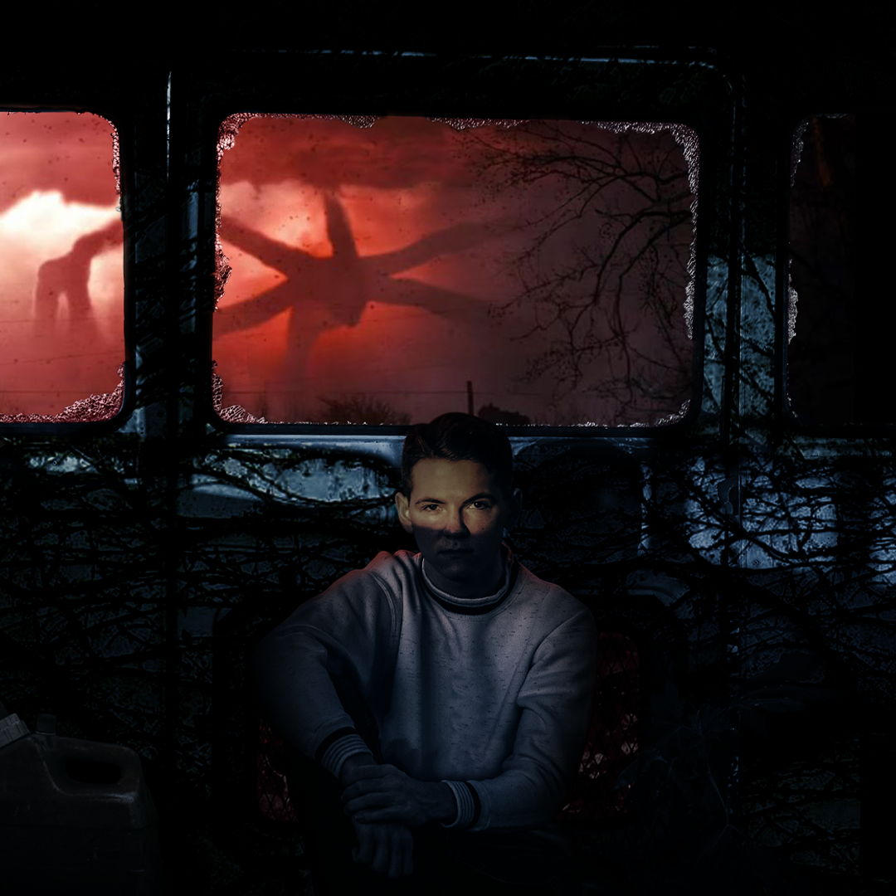

This is a picture that I photo-manipulated to fit the theme of the hit show "Stranger Things".
This took me about 8 hours to gather resources, get the picture, and create the piece.

This is a drawing I did in Photoshop. I had recently purchased a drawing tablet so I was just getting
used to it and made something quick but had some clean linework.